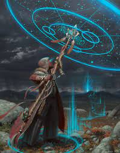

Cosmo
Level1
Custom Lineage(Darkvision)
15(+2)Wis 14Dex 13Con 12Cha 10Int 8Str
Feat:: Fey Touched
+1Wis + Misty Step(Free Once per day) + Hex(Free once per day)
Skills: Perception, Insight
Background: Strixhaven Initiate: Prismari
Cantrips: Firebolt, Prestidigitation, Ray of Frost
Cantrips: Produce Flame, Druidcraft
Spells: Healing Word, Entangle, Goodberry, Thunderwave, Fog Cloud
Equipment: Wood Shield, Scimitar, Leather Armor(Update to Studded Leather ASAP), Wood Staff(Druidic Focus)
____________________________________________________________________________
Level2
Circle of Stars
Cantrip: Guidance
Spells: Guiding Bolt(Free Cast PBTPD), Absorb Elements, Speak with Animals
Equipment: Star Map: A scroll covered with depictions of constellations
Wildshape x2:Starry Form:
- Archer(Combat Bonus Action 1d8+Wis Ranged Atk),
- Chalice(Healing, free 1d8+Wis healing to one target within 60 when casting 1st+ lvl spells)
- Dragon(Int,Wis and Concentration checks treat roll of < 10 as 10)
Other Wildshape UsesFind Familiar, Wolf(Combat) ,Cat(Climb), Spider(Climb+Tiny)
____________________________________________________________________________
Level3
Spells: Spike Growth
____________________________________________________________________________
Level4
Spells: Control Flames, Pass without Trace, Wither and Bloom
ASI: +2 Wis
Other Wildshape UsesReef Shark(Water)
____________________________________________________________________________
Level5
Spells: Sleet Storm
____________________________________________________________________________
Level6
Spells: Dispell Magic
Cosmic Omen: Reaction: When you finish a long rest roll a die:
- Weal: On an even roll, reaction PBTPD add d6 to an ally in 30 fts, attack, saving throw, or ability check
- Woe: On an odd roll, reaction subtractd d6 from an enemy in 30 fts, attack, saving throw, or ability check
____________________________________________________________________________
Level7
Spells: Wall of Fire
____________________________________________________________________________
Level8
Spells: Watery Sphere
Feat:: Resilient-CON
____________________________________________________________________________
Level9
Spells: Wall of Stone
____________________________________________________________________________
Level10
Spells: Transmute Rock
Twinkling Constellations:
Starry Form improves: The 1d8 of the Archer and the Chalice becomes 2d8, and while the Dragon is active, you have a flying speed of 20 feet and can hover.
Moreover, at the start of each of your turns while in your Starry Form, you can change which constellation glimmers on your body.
____________________________________________________________________________